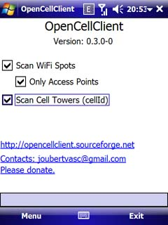

| Home | News | Documentation | Support | Downloads | License | Code | Change log | TODO | Donations |
The OpenCellID project wants to create a complete database of CellID worldwide, with their locations. How it works: making a query with cell tower information the service will answer with its coordinates. But, the tower must be added with its coordinates. At this point OpenCellClient can help. You will let this application turned on while you are walking or driving. The device will identify all cell towers and their coordinates. There are no need to be connect to the internet all the time spending with data transfer. You can send the colected data later, when you are in home or using some public WiFi spot for example. There is another crucial application will have benefit of the results of this service: RemoteTracker. This is an Antitheft software and you can use to track your device when it was lost or stolen. It works catching a formated SMS sent from any phone, MSN, AIM or web sites and then send useful informations back. These informations can have GPS coordinates, list os contacts, owner informations and more. |
 |

RemoteTracker also uses the OpenCellID database when your device can't connect to GPS or if your device does not have a built in GPS receiver.
Download OpenCellClient installer for free here and help OpenCellID to make the best free worldwide database of cell towers positioning.

|
Mail: joubertvasc@gmail.com |